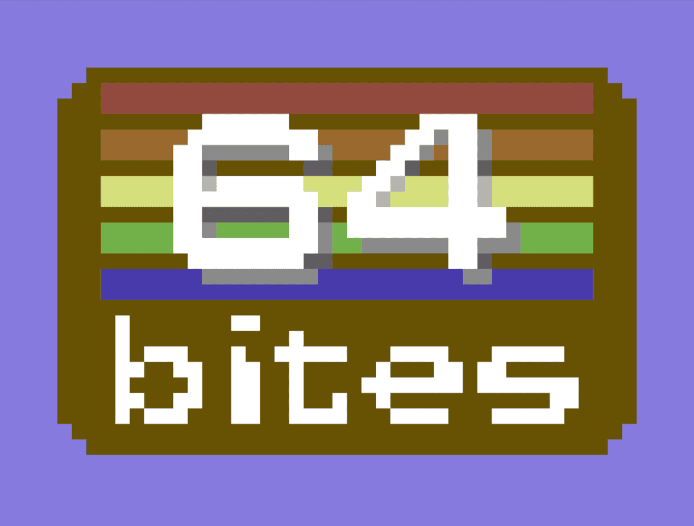
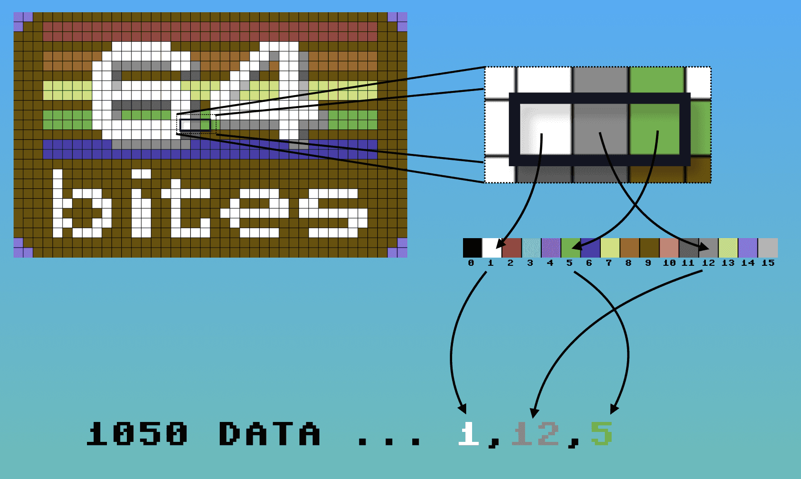

Create a 1k Image for Commodore 64 with Ruby
At the end of the Episode #006 - Read Data you can see a low-resolution image made out of characters. It was made using the READ command to pick values from a large DATA sequence and then POKE them into the screen memory. As the data set is rather large, we would prefer to generate it automatically…
The screen of Commodore 64 can display 25 rows of 40 characters. If you fill it with fully opaque characters, it can be used to display a ridiculously low-resolution image (40x25 = 1k of huge pixels in total).

For example the image above can be generated by the following program:
10 for y = 0 to 24
20 for x = 0 to 39
30 o = 40 * y + x
40 poke 1024 + o, 160
45 read c
50 poke 55296 + o, c
60 next x,y
70 goto 70
1000 data 14,14,9,9,9,9,9,9,9,9,9,9,9,9,9,9,9,9,9,9,9,9,9,9,9,9,9,9,9,9
1010 data 9,9,9,9,9,9,9,9,14,14,14,9,9,2,2,2,2,2,2,2,2,2,2,2,2,2,2,2,2,2
1020 data 2,2,2,2,2,2,2,2,2,2,2,2,2,2,2,2,2,9,9,14,9,9,9,2,2,2,2,2,2,2
1030 data 2,2,2,2,2,2,2,2,2,2,2,2,2,2,2,2,2,2,2,2,2,2,2,2,2,2,2,9,9,9
1040 data 9,9,9,9,9,9,9,9,9,9,1,1,1,1,1,1,9,9,9,9,9,9,9,9,9,1,1,1,1,9
1050 data 9,9,9,9,9,9,9,9,9,9,9,9,9,8,8,8,8,8,8,1,1,1,1,1,1,1,1,1,8,8
1060 data 8,8,8,8,1,1,12,1,1,12,8,8,8,8,8,8,8,9,9,9,9,9,9,8,8,8,8,8,1,1
1070 data 12,12,12,12,12,12,1,1,12,8,8,8,8,1,1,12,8,1,1,12,8,8,8,8,8,8,8,9,9,9
1080 data 9,9,9,9,9,9,9,9,1,1,11,9,9,9,9,9,9,11,11,9,9,9,1,1,11,9,9,1,1,11
1090 data 9,9,9,9,9,9,9,9,9,9,9,9,9,7,7,7,7,7,1,1,15,1,1,1,1,1,1,7,7,7
1100 data 7,1,1,15,7,7,7,1,1,15,7,7,7,7,7,7,7,9,9,9,9,9,9,7,7,7,7,7,1,1
1110 data 1,1,1,1,1,1,1,1,7,7,1,1,15,7,7,7,7,1,1,15,7,7,7,7,7,7,7,9,9,9
1120 data 9,9,9,9,9,9,9,9,1,1,11,11,11,11,11,11,1,1,11,9,1,1,1,1,1,1,1,1,1,1
1130 data 1,9,9,9,9,9,9,9,9,9,9,9,9,5,5,5,5,5,1,1,12,5,5,5,5,5,1,1,12,5
1140 data 1,1,1,1,1,1,1,1,1,1,1,12,5,5,5,5,5,9,9,9,9,9,9,5,5,5,5,5,1,1
1150 data 1,1,1,1,1,1,1,1,12,5,5,12,12,12,12,12,12,1,1,12,12,12,5,5,5,5,5,9,9,9
1160 data 9,9,9,9,9,9,9,9,9,1,1,1,1,1,1,1,1,11,11,9,9,9,9,9,9,9,9,1,1,11
1170 data 9,9,9,9,9,9,9,9,9,9,9,9,9,6,6,6,6,6,6,6,12,12,12,12,12,12,12,12,6,6
1180 data 6,6,6,6,6,6,6,6,12,12,6,6,6,6,6,6,6,9,9,9,9,9,9,6,6,6,6,6,6,6
1190 data 6,6,6,6,6,6,6,6,6,6,6,6,6,6,6,6,6,6,6,6,6,6,6,6,6,6,6,9,9,9
1200 data 9,9,9,9,9,9,9,9,9,9,9,9,9,9,9,9,9,9,9,9,9,9,9,9,9,9,9,9,9,9
1210 data 9,9,9,9,9,9,9,9,9,9,9,9,9,9,1,9,9,9,9,9,9,9,1,1,9,9,9,9,9,9
1220 data 9,9,9,9,9,9,9,9,9,9,9,9,9,9,9,9,9,9,9,9,9,9,9,9,1,9,9,9,9,9
1230 data 9,9,9,9,9,9,1,9,9,9,9,9,9,9,9,9,9,9,9,9,9,9,9,9,9,9,9,9,9,9
1240 data 9,9,9,9,1,9,1,1,1,9,9,9,1,9,9,1,1,1,1,1,9,9,9,1,1,1,1,9,9,9
1250 data 1,1,1,1,1,9,9,9,9,9,9,9,9,9,1,1,9,9,1,1,9,9,1,1,9,9,1,9,9,9
1260 data 9,9,1,9,9,9,1,1,9,1,1,9,9,9,9,9,9,9,9,9,9,9,9,9,1,9,9,9,9,1
1270 data 9,9,1,1,9,9,1,9,9,9,9,1,1,1,1,1,1,1,9,1,1,1,1,1,1,1,9,9,9,9
1280 data 9,9,9,9,1,1,9,9,1,1,9,9,1,1,9,9,1,9,9,1,9,9,1,9,9,9,9,9,9,9
1290 data 9,9,9,9,1,1,9,9,9,9,9,9,9,9,1,9,1,1,1,9,9,9,1,1,9,9,1,1,1,1
1300 data 9,9,9,1,1,1,1,9,9,9,1,1,1,1,1,9,9,9,9,9,14,9,9,9,9,9,9,9,9,9
1310 data 9,9,9,9,9,9,9,9,9,9,9,9,9,9,9,9,9,9,9,9,9,9,9,9,9,9,9,9,9,14
1320 data 14,14,9,9,9,9,9,9,9,9,9,9,9,9,9,9,9,9,9,9,9,9,9,9,9,9,9,9,9,9
1330 data 9,9,9,9,9,9,9,9,14,14
That sounds like a lot of typing…
While we could create all those DATA statements by hand, there is a better way. If we have a small 40x25 image, we could use it to generate the required DATA statements. To do that we need to match the color of every pixel of the image with a corresponding index of that color in the C64 palette. To simplify this process, we'll use the 16x1 palette image filled with C64 colors in the correct order. Now if we go through each of the pixels in the first image and find the corresponding color in the palette image, the index of that color will be the correct C64 color number.

Let's see that in code
We will use a simple Ruby script to do that. First we'll require the chunky_png gem to be able to work with png files.
require 'chunky_png'
Now we will read colors out of the palette.png file and store it's index in the colors hash.
colors = {}
palette = ChunkyPNG::Image.from_file('palette.png')
(0...palette.dimension.width).each do |index|
colors[palette[index, 0]] = index
end
Then we'll iterate through each pixel of the image40x25.png file, row by row. Match the pixel's color to it's index. And store the index in a color_indices array.
color_indices = []
image = ChunkyPNG::Image.from_file('image40x25.png')
(0...image.dimension.height).each do |y|
(0...image.dimension.width).each do |x|
color_indices << colors[image[x, y]]
end
end
Finally, we can use color_indices to create DATA statements. We'll print thirty indices per one DATA line to make sure we don't exceed the maximum limit of eighty characters.
color_indices.each_slice(30).with_index do |row, index|
puts "#{1000 + 10 * index} data #{row.join(",")}"
end
Make your own images!
This zip file contains the required images palette.png, image25x40.png and the ruby script - make_data.rb that you can use to create low-resolution images yourself.
Have Fun!